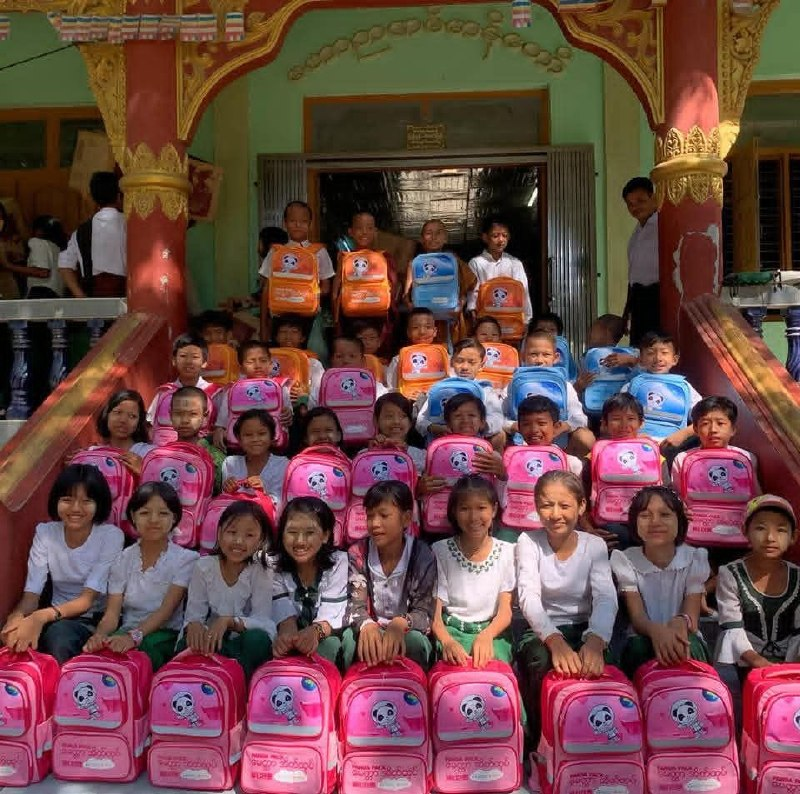
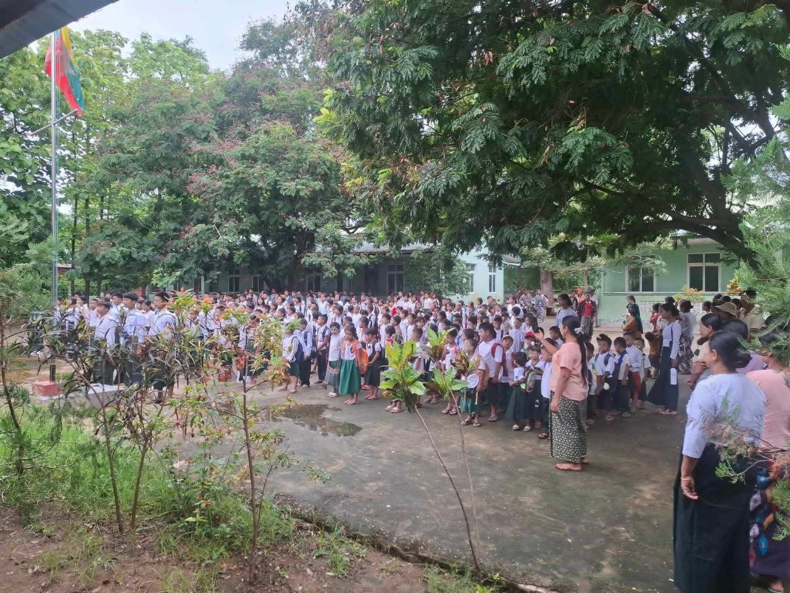
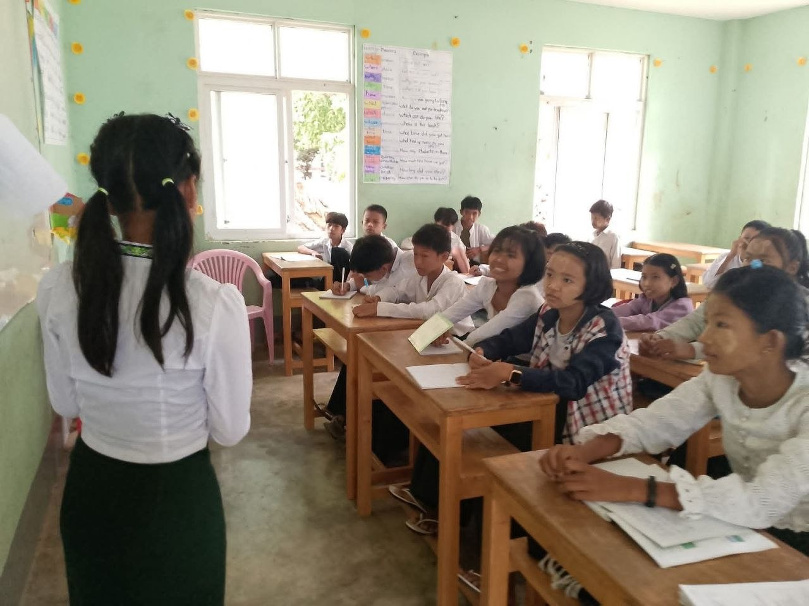
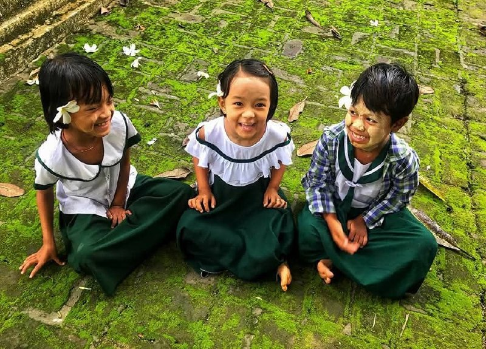
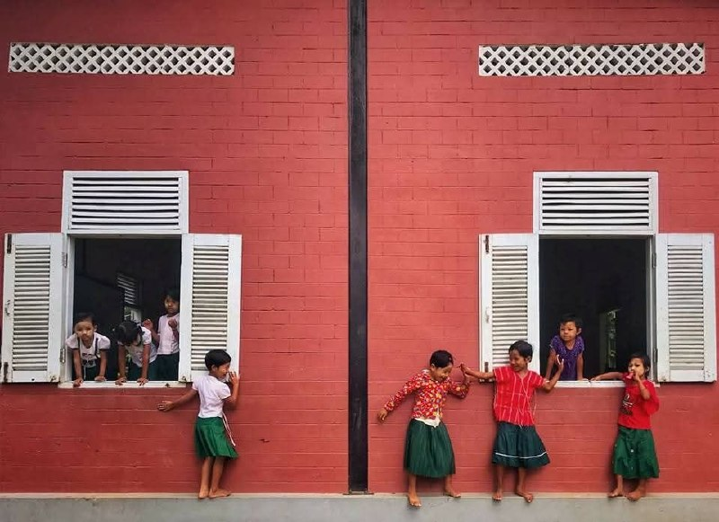
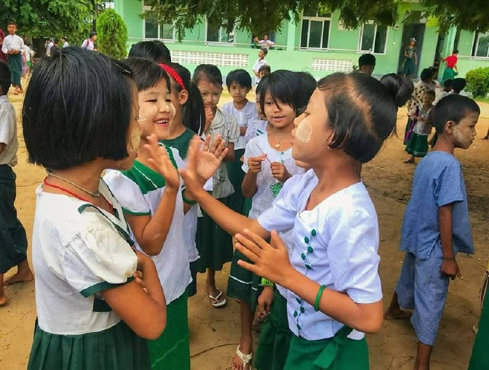
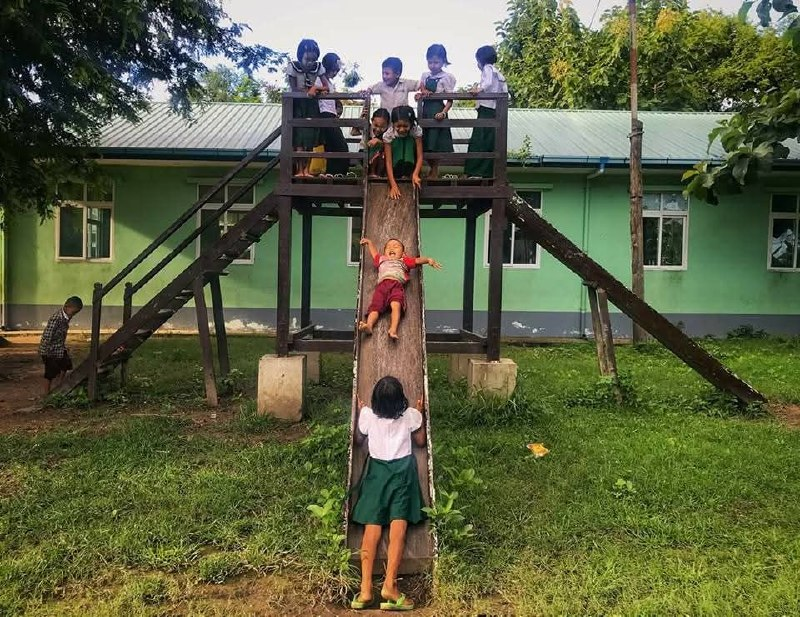
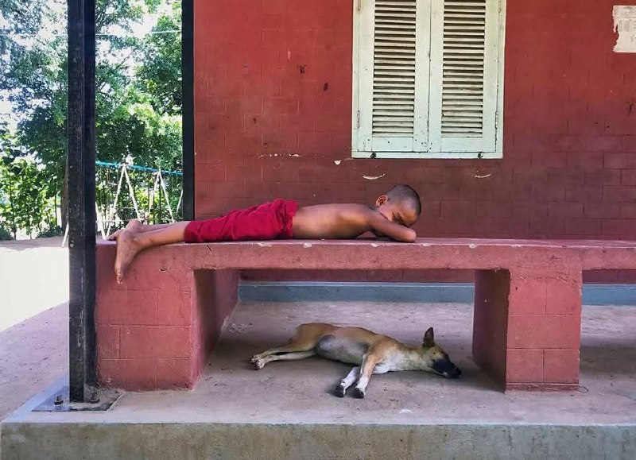
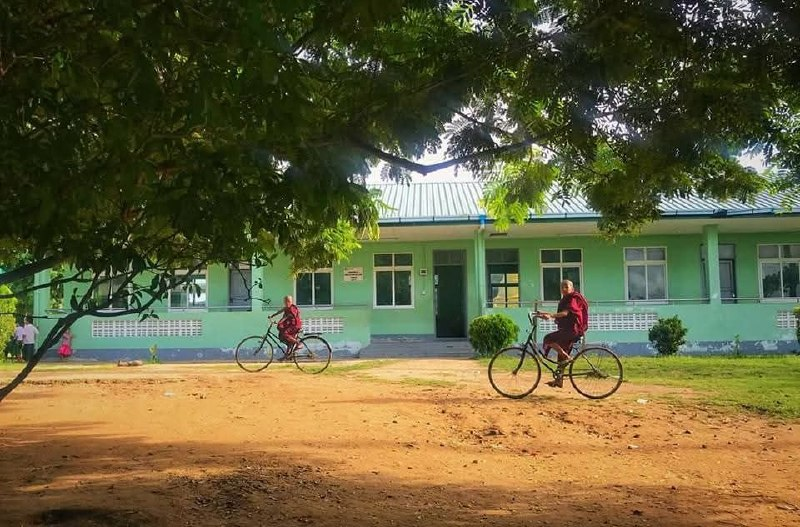

01
Holistic curriculum
We teach the official primary curriculum mandated by the Ministry of Education, giving students the same academic foundations as state schools.
Tatkon Township, Myanmar
A community-supported monastic school providing free primary education, care, and moral guidance for children who need it most.

Welcome
Nestled in Tatkon Township, Shwe Myo Gyi Gine Htauk Monastic Education School is both an official primary school and a spiritual home.
Rooted in Myanmar’s centuries-old tradition of monastic education, we help break the cycle of poverty by providing free, high-quality education and holistic care for vulnerable children in our community.
Every child deserves a safe place to learn, grow, and imagine a brighter future.
Our purpose
01
We teach the official primary curriculum mandated by the Ministry of Education, giving students the same academic foundations as state schools.
02
Our Sunday Dhamma School passes down Buddhist ethics, nurturing loving-kindness (Metta), mindfulness, and respect for the community.
03
Guided by Parahita, we help protect children from child labour and neglect while offering a vital social safety net for local families.
Our vision
To nurture literate, skilled, and morally grounded individuals who uplift their families and contribute positively to society.
Our story
Myanmar’s monastic schools, known as Hpone Gyi Kyaung, have supported grassroots education since the 11th century. Following the 1992 government decree that allowed monasteries to run official primary curricula, communities established centres such as ours to meet local needs.
Shwe Myo Gyi Gine Htauk was founded for village children, orphans, and families who could not afford the fees, registration costs, or uniforms required by secular state schools.
Our community
We serve orphans, underprivileged young people, and children from low-income families. With free learning materials, a caring environment, and the support of local donors, we help children build confidence for the future.
School life






Campus life


Sustained by faith and generosity
Shwe Myo Gyi Gine Htauk operates independently of tuition fees. Its mission is sustained through Dana—the generous giving of local devotees, well-wishers, and patrons around the world.
Together, we are not only teaching children to read and write. We are helping shape the compassionate leaders of tomorrow.